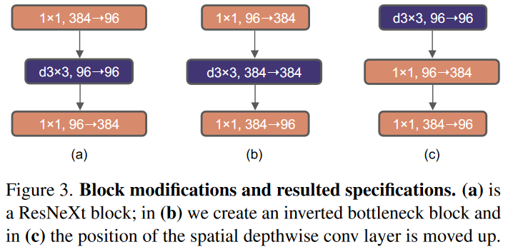
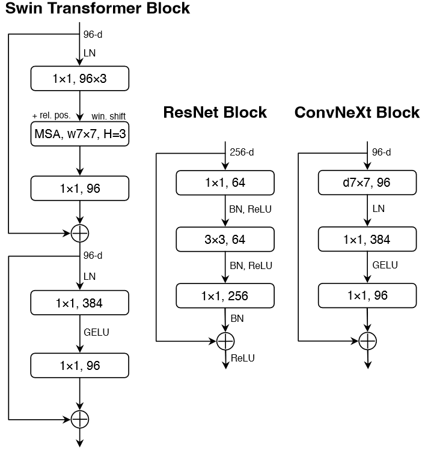
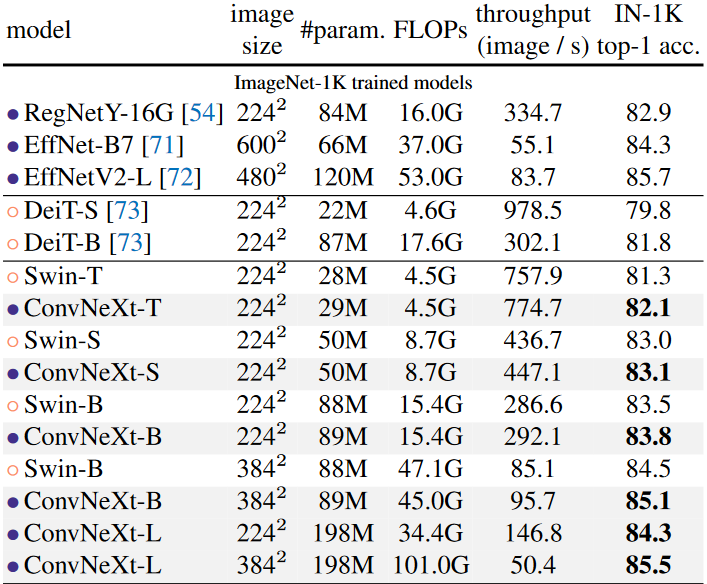
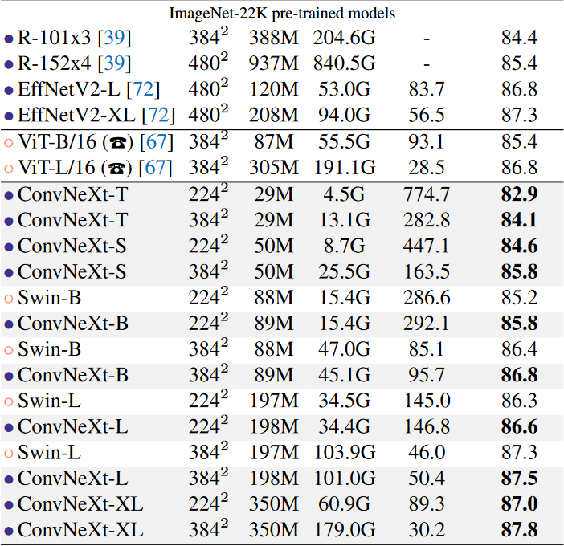
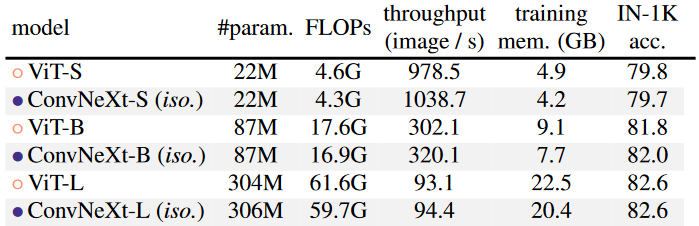

1. 引言
Transformer 取代了以往递归神经网络为主导的骨干架构，随着ViT的引入，彻底改变了网络架构设计的格局。但ViT的全局注意力机制对输入大小的复杂度过高，难以处理高分辨率的输入。
层级Transformer采用混合方法来解决这个问题，例如Swin Transformer采用了“滑动窗口”策略，也说明了卷积仍然非常受欢迎。本文目标是为卷积网络弥补前ViT时代和后ViT时代的差距，并测试唇卷积网络可以达到的极限。
2. Modernizing a ConvNet: a Roadmap（研究路线图）

以ResNet-50作为baseline，考虑以下几种设计决策：
- marco design（宏观设计）
- ResNeXt
- inverted bottlenect（倒置瓶颈）
- large kernel size（更大的卷积核）
- various layer-wise micro designs（多样的分层微设计）
2.1 训练技巧
- epoch: 90->300
- optimizer: AdamW
- data augmentation: Mixup, Cutmix, RandAugment, RandomErasing…
- regularization: Stochastic Depth, Label Smoothing
2.2 Marco Design（宏观设计）
- 改变阶段计算比：Swin-T的阶段计算比为1:1:3:1，更大型的Swin的阶段计算比为1:1:9:1。对此，将ResNet-50中的(3,4,6,3)改为 (3,3,9,3)，使模型准确率从78.8%提升至79.4%。
- 将stem改为"Patchify"（非重叠的卷积）：标准的ResNet中stem为(k=7,p=3,s=2)的卷积后跟一个(k=3,p=1,s=2)的最大池化，这导致输入图像的4倍下采样。将其更换为 (k=4,s=4)的卷积，模型准确率从79.4%提升至79.5%。
2.3 ResNeXt-ify
采用深度可分离卷积，使得每个操作单独混合空间或通道的信息。使用分组卷积(depthwise conv)能够降低网络的FLOPs，但也会降低准确率(78.3%)。将网络宽度从64扩展到96，准确率提升到80.5%。
2.4 Inverted Bottlenect（倒置瓶颈）
Transformer中的MLP的隐藏维度比输入维度大4倍（384:96），这就是倒置瓶颈。对倒置瓶颈的探索如下图(a)(b)，这使得准确率提升(80.5%->80.6%)的同时降低了FLOPs(下采样残差1x1卷积的FLOPs减少)。

2.5 Large Kernel Sizes（大卷积核）
VGG推广的黄金标准是堆叠3x3的小卷积核，这在现代化GPU上更高效，但Swin中的窗口大小至少为7x7。
- 上移分组卷积层：如上图(b)(c)，使复杂低效的模块(MSA)有更少的通道数，降低FLOPS至4.1G，性能暂时下降到79.9%。
- 增大卷积核：将卷积核大小从3x3增大到7x7，FLOPs大致保持不变，准确率提升至80.6%。当继续增大卷积核时并没有带来更大准确率增益。
2.6 Micro Design（微观设计）
- 将ReLU更换为GELU：准确率不变
- 更少的激活函数：如下图所示，复制Swin的样式，将残差块中的激活函数去掉，去掉两个卷积层中的一个激活函数，准确度提升至81.3%。
- 更少的归一化层：去掉两个归一化层，在1x1卷积前只留下一个BN层，准确率提升到81.4%，超过Swin。
- 将BN替换为LN：BN能够加速收敛并减少过拟合，但BN错综复杂，可能对模型的性能产生不利影响。在ResNet中直接将BN替换为LN会导致性能不佳，但随着对网络结构和训练技巧的修改，使用LN将准确率提升至81.5%。
- 可分离的下采样层：ResNet中的下采样是通过每个阶段开始时的残差块实现的。Swin中添加了一个单独的下采样层。本文用单独的(k=2,s=2)卷积实现下采样，后续实验发现在分辨率变化的地方添加归一化层有助于稳定训练，这时准确率达到82.0%。

3. 在ImageNet上的评估
构建了不同的ConvNeXt变体：
- ConvNeXt-T: C =(96, 192, 384, 768), B =(3, 3, 9, 3)
- ConvNeXt-S: C =(96, 192, 384, 768), B =(3, 3, 27, 3)
- ConvNeXt-B: C =(128, 256, 512, 1024), B =(3, 3, 27, 3)
- ConvNeXt-L: C =(192, 384, 768, 1536), B =(3, 3, 27, 3)
- ConvNeXt-XL: C =(256, 512, 1024, 2048), B =(3, 3, 27, 3)
3.1 结果
-
ImageNet-1K：

-
ImageNet-22K 预训练，ImageNet-1K 微调：

3.2 Isotropic ConvNeXt vs. ViT（同质性比较）
同质架构（Isotropic architecture）：同质架构模型没有下采样层，在所有深度都保持相同的特征图分辨率，只需要用特征大小（即patch embedding的维度）和网络深度（即blocks数量）两个参数定义。
ConvNeXt的性能同ViT相当，说明ConvNeXt块设计在用于非层级模型时具有竞争力。

4. 在下游任务上的评估
4.1 COCO数据集上的目标检测和分割
4.2 ADE20K上的语义分割
4.3 关于模型效率的评论
5. 总结
ConvNeXt模型本身不是全新的，里面的许多设计都被单独测试过，但没有放在一起测试过。ConvNeXt的实验结果是优秀的，在多个计算机视觉基准测试中与最先进的层级Transformer竞争的同时，还保留着标准卷积网络的简单性和效率。